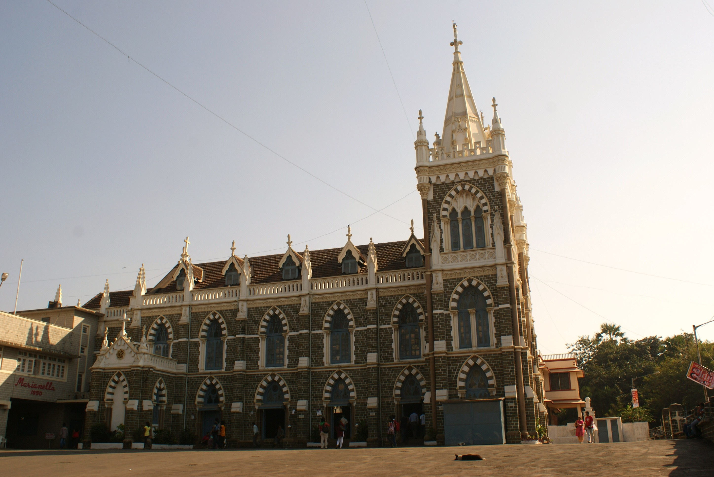

Mount Mary Basilica
Explore the history and character of this remarkable Mumbai landmark.
Description
Mount Mary Basilica, also known as the Basilica of Our Lady of the Mount, is a historic church located on a hill in Bandra, Mumbai. It is known for its beautiful architecture and its importance as a place of pilgrimage.
History
The history of the church dates back several centuries. The present basilica was built in the early twentieth century and has become an important religious and architectural landmark of Mumbai.
Every year, the area around the basilica attracts many visitors during the annual Bandra Fair, which is held in honour of Our Lady of the Mount.